RTESArenaAssist est une application qui accompagne The Elder Scrolls: Arena. Pendant que vous jouez, elle affiche en complément la traduction, la carte, le journal, l'historique, la gestion des sauvegardes, les captures, le dictionnaire et le manuel.
Les images ont été prises avec Assist dans votre langue d'affichage, avec le thème « Sombre », les réglages par défaut et sans connexion. Une fois connecté, l'affichage change selon l'écran en cours d'Arena et l'état du jeu.
L'utilisation de base consiste à lancer Arena, à connecter Assist, puis à jouer en passant en mode disposition avec le bouton ⊞. Le mode disposition range l'écran de jeu DOSBox et la traduction, la carte et les onglets d'Assist dans le même écran, de sorte que vous pouvez tout consulter sans basculer avec Alt+Tab.
Pour le détail des paramètres, voir la page « Paramètres » de ce manuel (guide détaillé de la boîte de dialogue des paramètres).
La version publique n'inclut pas les données textuelles d'origine d'Arena. Au premier lancement, les fichiers de traduction sont générés à partir du dossier Arena de l'utilisateur.
Commencez par choisir la langue d'affichage d'Assist. La langue choisie est appliquée immédiatement sur cet écran.
| Action | Description |
|---|---|
Liste déroulante des langues (Choose display language) | Choisit la langue de l'interface d'Assist. Cet écran ne propose que le japonais, l'anglais (English) et l'espagnol (Español). Les autres langues se choisissent après le démarrage, avec « Langue » dans l'onglet « Général » de la boîte de dialogue des paramètres. |
Next (Suivant) | Passe à l'indication du dossier d'Arena. |
Si vous poursuivez alors qu'Arena est lancé, Assist détecte automatiquement le dossier d'installation à partir du jeu en cours d'exécution. Si la détection automatique échoue, indiquez le dossier de données d'Arena avec Browse… (Parcourir).

| Élément | Description |
|---|---|
Dossier d'installation du jeu (Game install folder) | Indiquez le dossier ARENA d'Arena. |
Browse… (Parcourir) | Indique le dossier d'Arena depuis une boîte de dialogue de sélection de dossier. |
Re-check (Vérifier de nouveau) | Détecte de nouveau l'Arena en cours d'exécution. |
Build translation files (Créer les fichiers de traduction) | Quand un dossier Arena valide a été trouvé, passe à la génération des fichiers de traduction. |
Les fichiers de traduction d'Assist sont générés à partir des données du dossier Arena. Une fois la génération terminée, l'écran principal s'affiche.

Pendant la création, une barre de progression et l'étape en cours s'affichent. Des données sont aussi lues depuis Arena en cours d'exécution : ne fermez pas Arena avant la fin.
Assist comporte une barre de connexion en haut, la zone des onglets au centre et la barre d'état en bas.
Juste après le démarrage, Assist n'est pas connecté. Avec Arena / DOSBox lancé, appuyez sur le bouton Connecter en haut à droite.

| Zone | Description |
|---|---|
| État de la connexion | Affiche « Non connecté » ou, une fois connecté, le nom de l'écran en cours, le nom de l'IMG, etc. |
| Connecter / Déconnecter | Se connecte à Arena dans DOSBox, ou met fin à la connexion. |
⏸ / ▶ / ■ | Met en pause / reprend / arrête la lecture à voix haute. Elle est utilisable une fois activée dans l'onglet « Lecture à voix haute » de la boîte de dialogue des paramètres (désactivée par défaut). |
⊞ | Bascule le mode disposition. Un clic droit ouvre le menu de disposition. |
📷 | Enregistre une capture d'écran. En mode disposition, la disposition entière est enregistrée en une seule image. Tant que la fenêtre du jeu (DOSBox) a le focus, le raccourci clavier (par défaut F12) enregistre une capture de la même façon. |
⚙ | Ouvre la boîte de dialogue des paramètres. |
Le message « Raccourci F12 enregistré » qui apparaît dans la barre d'état juste après le démarrage indique que le raccourci clavier de capture est prêt à l'emploi. La touche se modifie dans l'onglet « Général » de la boîte de dialogue des paramètres.
Une fois connecté, le nom de l'écran reconnu s'affiche à gauche de la barre de connexion. L'exemple ci-dessous montre une connexion à l'écran titre d'Arena.
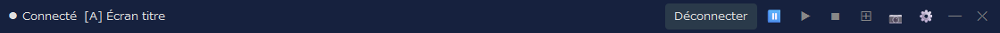
À droite du nom de l'écran s'affiche aussi le nom de l'IMG utilisée par cet écran (il n'apparaît pas pour un écran qui n'utilise pas d'IMG, comme l'écran titre). Dans l'onglet « Affichage » de la boîte de dialogue des paramètres, vous pouvez choisir d'afficher le nom de l'écran, celui de l'IMG, ou les deux.
Assist est conçu pour être utilisé en mode disposition. Les onglets restent utilisables dans la fenêtre normale, mais le mode disposition permet de garder l'écran de jeu, la traduction, la carte, l'historique, etc. fixés dans le même écran.
Dans la disposition par défaut, l'écran de jeu DOSBox se trouve à gauche, les onglets principaux d'Assist à droite et un panneau auxiliaire en bas. Pendant le jeu, vous pouvez consulter la carte ou le journal à droite, et vérifier la traduction de l'écran en cours en bas ou dans l'onglet Traduction.
| Action | Description |
|---|---|
Clic gauche sur ⊞ | Démarre ou quitte le mode disposition. |
Clic droit sur ⊞ | Permet de choisir la forme de la disposition, le coin de placement, le mode de suivi, de redisposer, l'affichage au premier plan, etc. |
📷 | En mode disposition, enregistre la disposition entière, DOSBox et Assist compris, en une seule image. |
Déconnecter | Met fin à la connexion avec Arena. Quitter le mode disposition avant de vous déconnecter facilite le rangement des fenêtres. |
Les captures d'écran de chaque onglet servent à montrer la structure de l'écran. Une fois connecté, le contenu est mis à jour selon l'écran en cours d'Arena et l'état du jeu.
C'est l'onglet principal, qui affiche la traduction correspondant à l'écran en cours. L'affichage change selon la situation : écran titre, création de personnage, conversations, établissements, objets, sorts, etc.
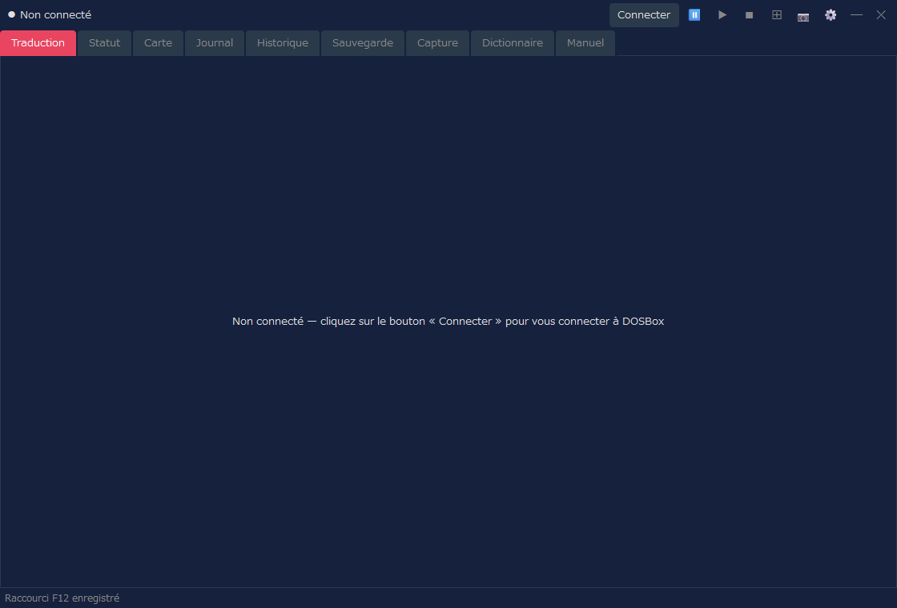
| Contenu affiché | Description |
|---|---|
| Résultat de la traduction | Affiche la traduction de l'écran ou de l'événement en cours dans la langue d'affichage. |
| Texte original | Selon les paramètres, affiche aussi le texte original anglais correspondant. |
| Affichages dédiés | La liste des classes, la liste des races, l'équipement, la liste des établissements, la liste des achats, etc. passent à un affichage dédié, plus lisible. |
Dans l'onglet « Informations de combat » des paramètres, vous pouvez aussi afficher les informations de combat dans l'onglet Traduction. Choisissez « Combat et vue normale » ou « Vue de combat complète », puis précisez s'il s'agit d'informations textuelles ou de jauges des ennemis. Par défaut, rien n'est affiché et l'affichage habituel de l'onglet Traduction est conservé.
Cet onglet permet de vérifier les attributs et l'état du personnage. Une fois le personnage créé, ou quand Assist est connecté pendant le jeu, les informations de statut s'affichent.
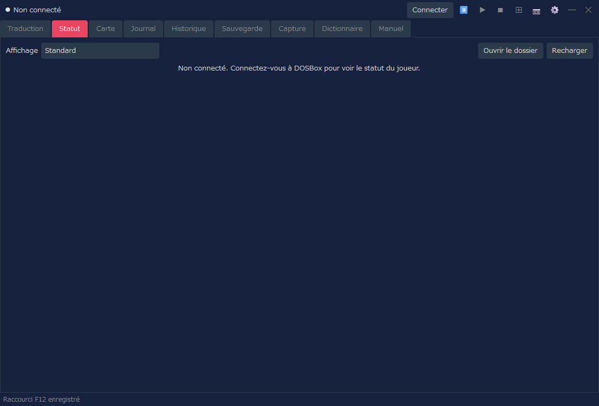
| Contenu affiché | Description |
|---|---|
| Affichage | Choisissez « Standard » (l'affichage utilisé jusqu'ici) ou un design de votre choix (fiche de personnage). L'écran de statut et la répartition des attributs de l'onglet Traduction utilisent aussi l'affichage choisi ici. |
| Attributs | Permet de vérifier les principaux attributs : Force, Intelligence, etc. |
| Valeurs d'état | Permet de vérifier la santé, la fatigue, les points de sort, etc. |
| Modifications | Les opérations comme la modification des attributs ne sont disponibles que si vous avez activé explicitement les paramètres de triche (affichage « Standard »). |
Cette fonction affiche le statut dans le design de votre choix. Quand vous choisissez autre chose que « Standard » dans « Affichage », le statut s'affiche dans le design choisi. Un design est un fichier HTML (un modèle) ; 8 designs sont fournis, et vous pouvez aussi créer le vôtre. Certains designs affichent le visage et l'image en pied (équipement compris), l'état du personnage (maladie, poison, paralysie, etc.) et l'indice d'armure de chaque partie du corps (valeur calculée d'après l'équipement ; plus elle est basse, mieux on est protégé). Le visage et l'image en pied sont fabriqués à partir des fichiers de votre Arena.
| Action | Description |
|---|---|
| Ouvrir le dossier | Ouvre le dossier où placer vos propres fiches de personnage (fichiers HTML) : character_sheets, au même endroit que RTESArenaAssist.exe. La première fois, des copies des designs fournis y sont placées. Les fichiers que vous y mettez apparaissent dans la liste « Affichage » avec la mention « (dossier) ». |
| Recharger | Relit les fiches de personnage du dossier. Appuyez dessus après avoir modifié un fichier. |
Pour la liste des designs fournis, le fonctionnement des fiches de personnage, les valeurs que l'on peut insérer et la façon de les écrire, voir la page « Designs de statut (fiches de personnage) » de ce manuel.
Cet onglet affiche la carte automatique des donjons, des villes, des régions et des intérieurs. L'affichage est mis à jour selon votre position dans le jeu.
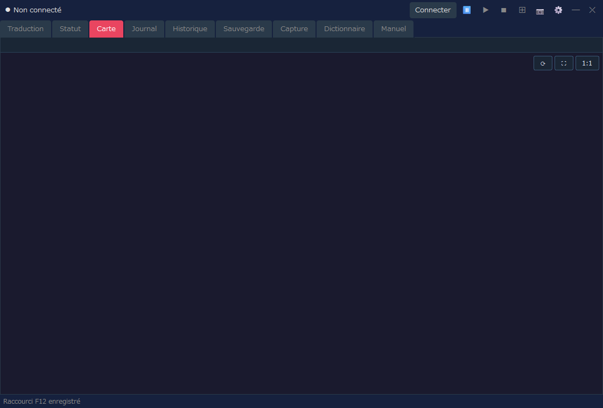
| Contenu affiché | Description |
|---|---|
| Position actuelle | Affiche la carte et la position en cours à partir de l'état du jeu connecté. |
| Carte automatique | Dessine les zones découvertes, les murs, les entrées, le relief des régions, etc. |
| Réglages d'affichage | Le quadrillage, les coordonnées des blocs, l'affichage étendu de la région, etc. se règlent dans la boîte de dialogue des paramètres. |
Cet onglet permet de lire, dans votre langue, le contenu enregistré dans le Logbook / Journal du jeu.
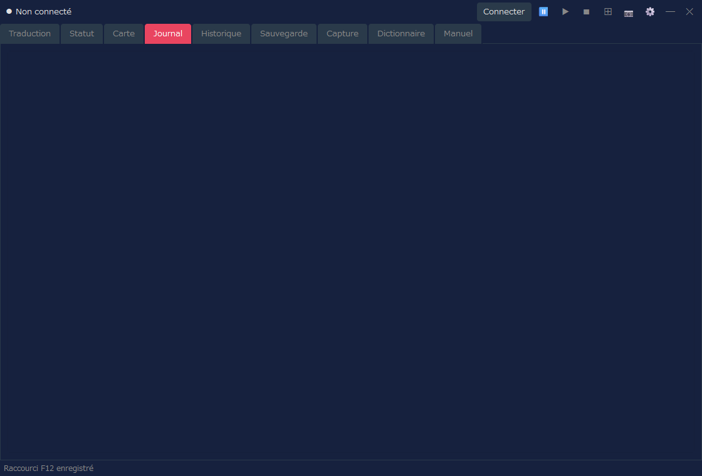
| Contenu affiché | Description |
|---|---|
| Date et titre | Affiche la date et le résumé des entrées du journal. |
| Texte | Affiche le texte du Logbook dans votre langue. |
| Mise à jour | Quand le journal est mis à jour dans le jeu, l'affichage d'Assist l'est aussi. |
Cet onglet permet de relire, sous forme d'historique, les traductions affichées par Assist. Il est pratique pour relire plus tard un texte que vous avez manqué.
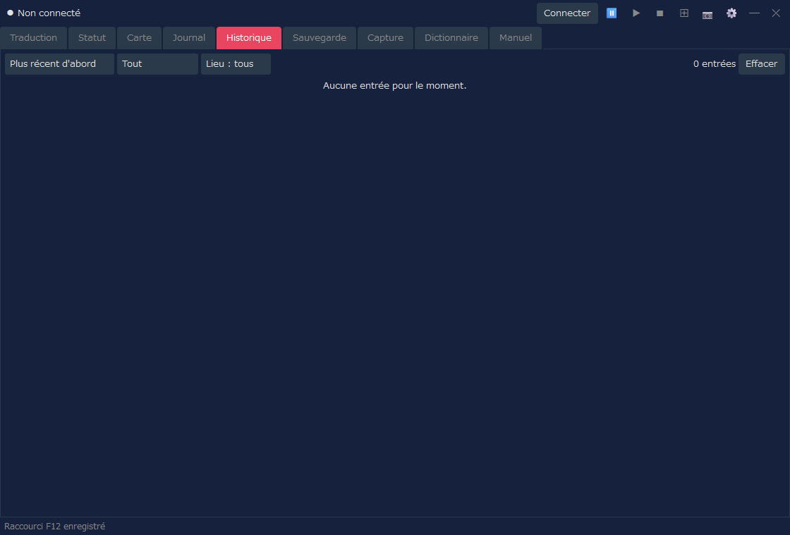
| Action | Description |
|---|---|
| Ordre | Bascule entre « Plus récent d'abord » et « Plus ancien d'abord ». |
| Filtres | Filtre l'historique par type ou par lieu. |
| Effacer | Efface l'historique affiché. |
Si l'enregistrement du journal de combat est activé et qu'il contient des entrées, vous pouvez basculer dans l'onglet Historique entre « Journal normal » et « Journal de combat ». S'il n'y a pas de journal de combat, seul le journal normal est affiché, comme auparavant.
Cet onglet gère les emplacements de sauvegarde d'Arena et leurs sauvegardes. Il facilite les opérations sur les données de sauvegarde, comme la sauvegarde automatique avant une restauration.
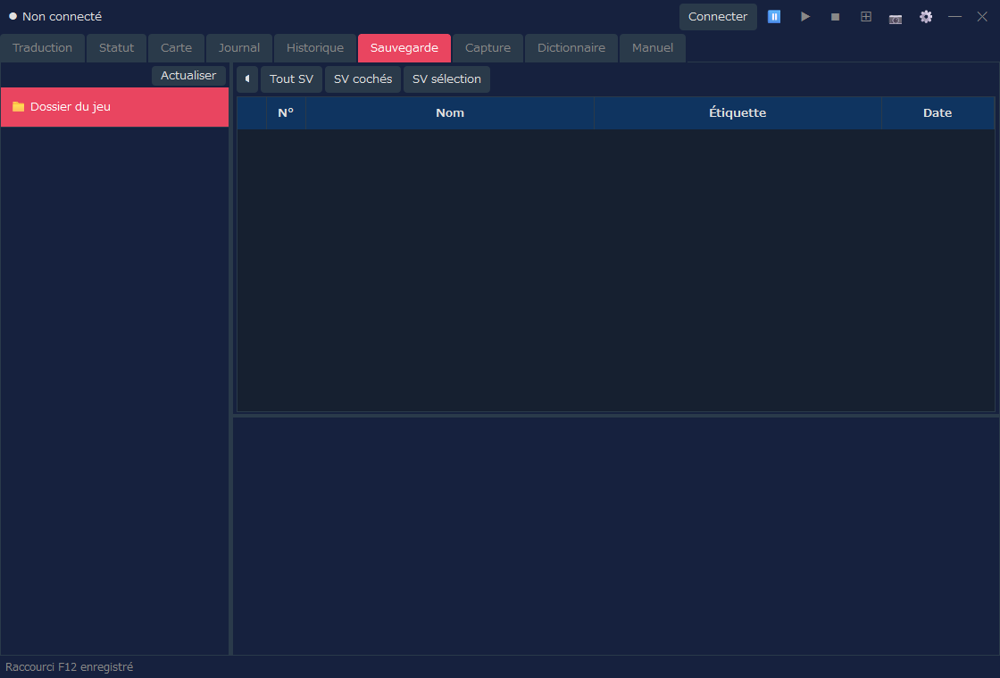
| Action | Description |
|---|---|
| Liste des emplacements | Affiche la liste des emplacements de sauvegarde d'Arena. |
| Sauvegarde | Sauvegarde la partie sélectionnée. |
| Restaurer | Remet des données de sauvegarde depuis une sauvegarde. |
| Supprimer | Supprime les sauvegardes ou les parties inutiles. |
Cet onglet permet de consulter les captures d'écran enregistrées avec le bouton 📷. Les images prises en mode disposition peuvent aussi être ouvertes ici.
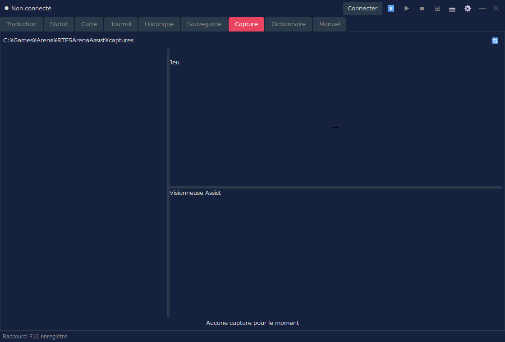
| Action | Description |
|---|---|
| Liste | Affiche les captures enregistrées. |
| Aperçu | Permet de vérifier l'image sélectionnée. |
| Verrouiller | Protège de la suppression les images que vous voulez conserver. |
| Supprimer | Supprime l'image sélectionnée ou les images inutiles. |
Cet onglet permet de rechercher dans le dictionnaire de traduction et le texte de donjon d'Assist. Il sert à vérifier un mot ou une phrase rencontrés dans le jeu.
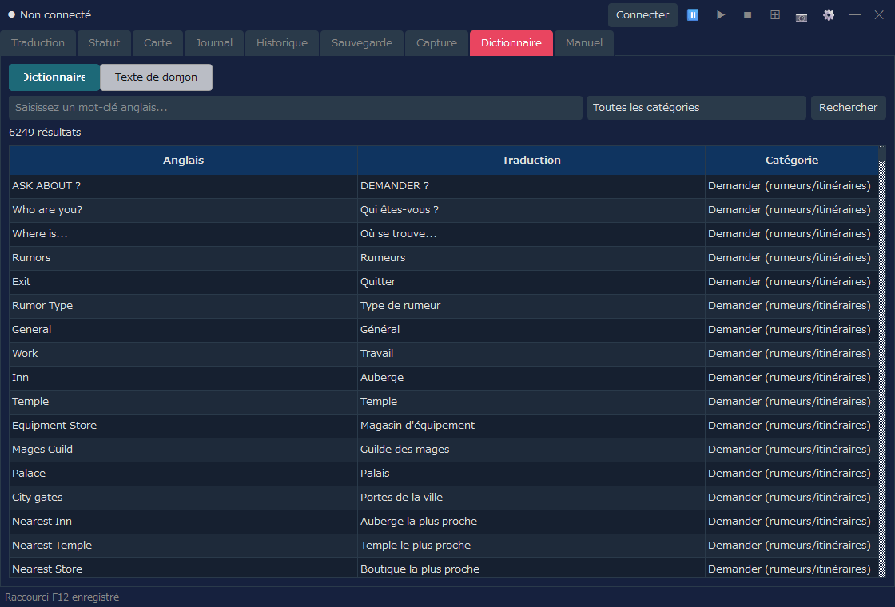
| Mode d'affichage | Description |
|---|---|
| Dictionnaire | Recherche par mot-clé anglais, par traduction ou par catégorie. |
| Texte de donjon | Recherche et consulte les textes de donjon issus des INF. |
Cet onglet permet de consulter, dans votre langue d'affichage, l'explication des commandes de base et du système d'Arena ainsi que celle des fonctions d'Assist. Utilisez-le pour vérifier une commande ou un terme pendant le jeu.
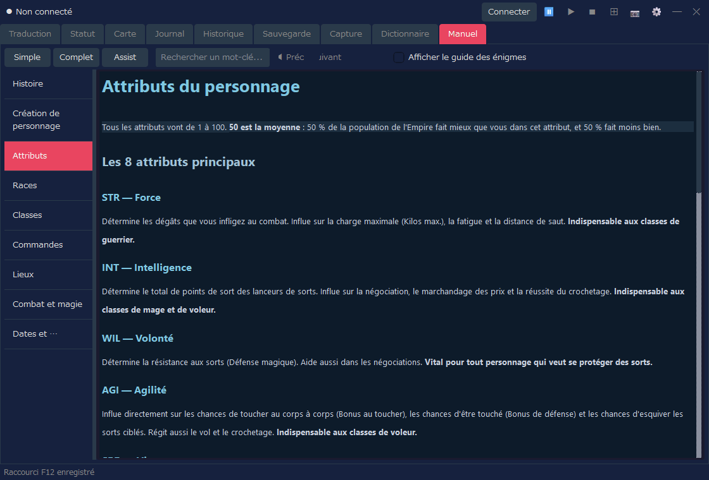
| Action | Description |
|---|---|
| Simple / Complet / Assist | Change le contenu affiché (tableau ci-dessous). |
| Recherche par mot-clé | Recherche dans le manuel. |
| Liste de gauche | Passe d'un chapitre à l'autre : Histoire, Création de personnage, Commandes, Combat, etc. |
| Mode | Contenu | Langues |
|---|---|---|
| Simple | Explication du jeu (9 chapitres) | 12 langues |
| Complet | Traduction du manuel officiel (affichée après l'importation d'un paquet de traduction) | Actuellement le japonais uniquement |
| Assist | Explication des fonctions d'Assist (utilisation de base, boîte de dialogue des paramètres, designs de statut (fiches de personnage)) | 12 langues |
Version complète (traduction du manuel officiel)
Avec « Complet », vous pouvez lire la traduction du manuel officiel (le Player's Guide et son addendum). Les traductions sont distribuées, séparément de l'application, sous forme de paquet de traduction pour chaque langue d'affichage (RTESArenaAssist-manual-<langue>.zip) sur la page de téléchargement du manuel (actuellement le japonais uniquement). Lors de la première utilisation, importez-la comme suit.
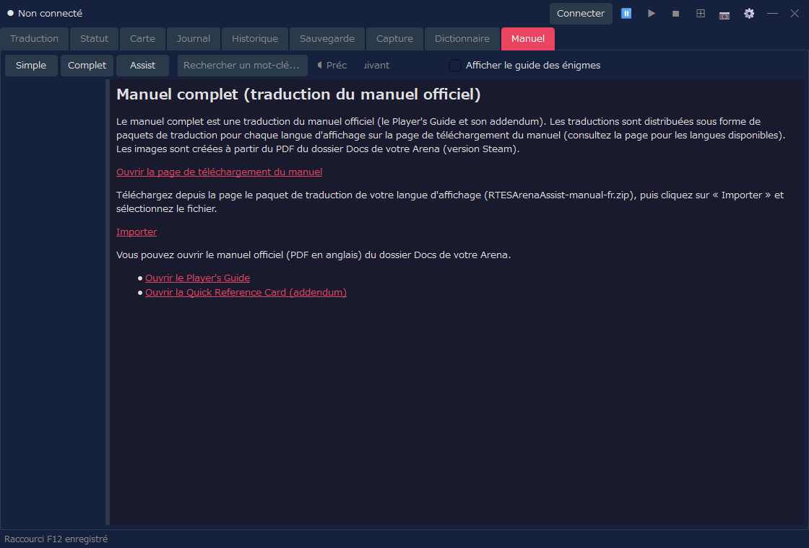
Les images du manuel sont créées à partir de Player Guide.pdf, dans le dossier Docs de votre Arena (version Steam). Si le PDF est introuvable ou n'est pas la bonne version, seul le texte est affiché. Après avoir vérifié le « Dossier du jeu » dans les paramètres, appuyez sur « Recréer les images » pour afficher aussi les images. Une fois l'importation faite, vous pouvez supprimer le fichier téléchargé. Assist lui-même ne se connecte pas à Internet (le téléchargement se fait avec votre navigateur).
« Complet » affiche aussi des liens pour ouvrir le manuel officiel (PDF en anglais) du dossier Docs. Si la langue d'affichage est l'anglais, seuls ces liens sont affichés à la place du paquet de traduction.
Connecter en haut à droite d'Assist pour vous connecter à Arena / DOSBox.⊞ pour passer en mode disposition.📷 ou avec le raccourci clavier (par défaut F12).⊞, puis, si nécessaire, appuyez sur Déconnecter.La taille d'affichage du mode disposition, la forme de la disposition, le panneau de traduction, le dossier d'enregistrement des captures, etc. se règlent dans la boîte de dialogue des paramètres. Pour utiliser la lecture à voix haute des traductions, activez-la aussi dans l'onglet « Lecture à voix haute » de la boîte de dialogue des paramètres.